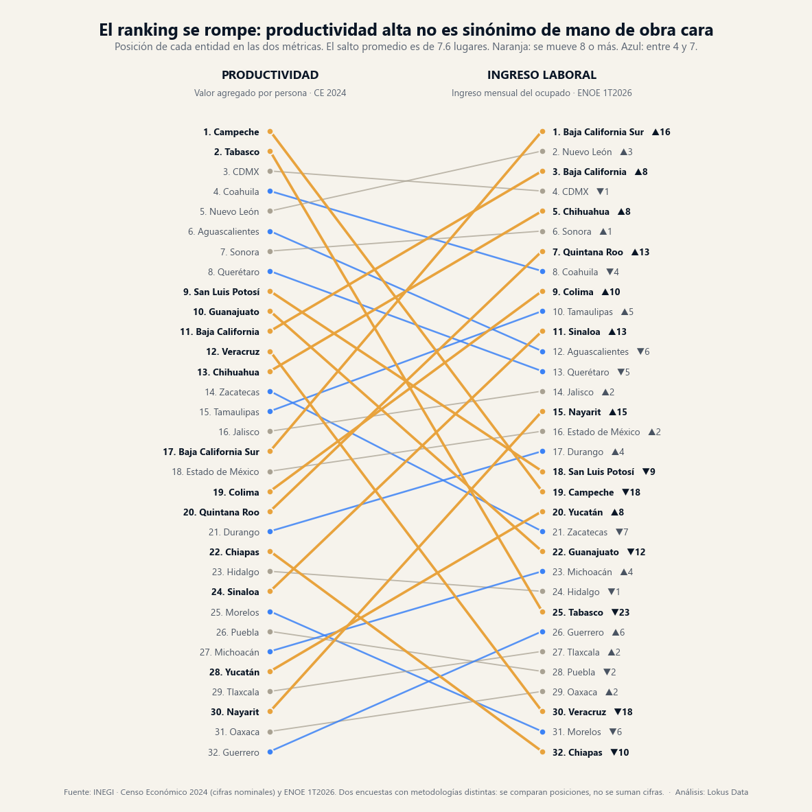
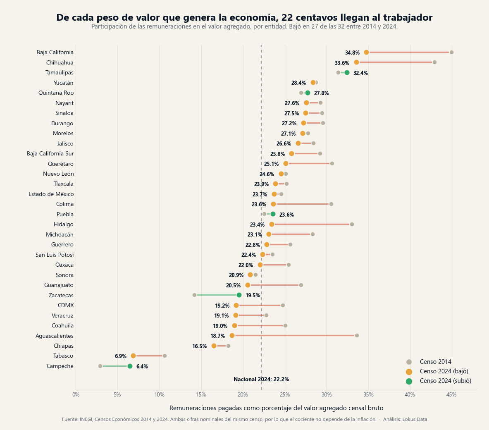

Productividad alta no significa mano de obra cara: el mapa cruzado de las 32 entidades
La correlación entre el valor que genera la economía de un estado y lo que ahí gana un trabajador es de 0.096: prácticamente ninguna. Doce entidades caen en un cuadrante cruzado y el salto promedio entre un ranking y el otro es de 7.6 lugares. Para quien evalúa dónde abrir planta, oficina o punto de venta, eso significa que dos variables que suelen darse por atadas se pueden elegir por separado.

El panorama: dos métricas que no van tomadas de la mano
El Censo Económico 2024 contabiliza 5,468,180 unidades económicas, 27,965,433 personas ocupadas y $15.67 billones de pesos de valor agregado: $560,263 por persona al año en el promedio nacional. La ENOE del primer trimestre de 2026 pone el otro lado: 59,552,660 ocupados y un ingreso que va de $16,327 mensuales en Baja California Sur a $7,309 en Chiapas. Ordenadas las 32 entidades por ambas métricas, la relación es de 0.096: saber cuánto valor genera por persona un estado no dice casi nada sobre cuánto cuesta contratar ahí.
La lectura de negocio
La intuición dominante al planear una expansión es que los estados productivos son caros y los baratos son improductivos, y que hay que elegir entre eficiencia y costo. Los datos dicen que ese trade-off no existe como regla: doce de las 32 entidades caen en un cuadrante cruzado y catorce se mueven ocho o más lugares entre un ranking y el otro. Ahí es donde vive el arbitraje territorial.
Los dos primeros lugares no son mercados: son enclaves
Campeche encabeza el país con $1,765,839 de valor agregado por persona y Tabasco le sigue con $1,699,293, más del triple del promedio nacional. Y sin embargo aparecen en los lugares 19 y 25 de ingreso laboral. El detalle sectorial explica por qué en una línea: en Campeche, 15 unidades económicas de minería (SCIAN 21) generan el 84.6% del valor agregado del estado con el 6.2% de su personal ocupado; en Tabasco, 61 unidades generan el 80.7% con el 6.7% del personal. La minería es la actividad con mayor valor por persona del país —$6,609,653 anuales a nivel nacional— y opera con una plantilla mínima.
Para dimensionar un mercado la distinción es decisiva: un estado con valor agregado altísimo concentrado en pocas unidades no tiene una masa salarial proporcional a su tamaño económico. El dinero no circula localmente en la escala que sugiere la cifra agregada.
Cuánto del valor generado se va en nómina, estado por estado

La métrica más útil para planear costos no es el salario nominal sino cuánto pesa la nómina dentro del valor que genera la operación. A nivel nacional, las remuneraciones equivalen al 22.2% del valor agregado en 2024, contra 23.3% en 2014 y 24.8% en 2004. El rango entre entidades es enorme: Baja California 34.8% y Chihuahua 33.6% en el extremo alto —estructura maquiladora, intensiva en personal remunerado— frente a Chiapas 16.5%, Tabasco 6.9% y Campeche 6.4% en el bajo.
Y la tendencia es de una sola dirección: la participación bajó en 27 de las 32 entidades entre 2014 y 2024. El caso extremo es Aguascalientes: el mayor salto de productividad del país (+257.0% en valor por persona) acompañado de la mayor caída en participación laboral, de 33.6% a 18.7%. En el largo plazo la brecha es la misma historia: entre 2004 y 2024 el valor por persona se multiplicó por 2.70 y la remuneración media por persona remunerada por 2.12, ambas en pesos corrientes, de modo que la distancia entre las dos series no depende de la inflación.
El mapa cruzado: quién sube y quién baja al cambiar de métrica
Los movimientos más grandes del ranking son los que interesan a una decisión de expansión. Baja California Sur salta del lugar 17 en productividad al 1 en ingreso ($16,327 mensuales): mercado turístico con ingreso alto y baja productividad censal, es decir, mano de obra cara en un tejido de unidades pequeñas. Quintana Roo sube 13 lugares y Sinaloa 13; Nayarit, 15. En sentido contrario, Veracruz cae 18 lugares (12 en productividad, 30 en ingreso) y Guanajuato 12 (10 en productividad, 22 en ingreso, con 54.8% de informalidad): territorios con base productiva sólida donde el ingreso laboral promedio sigue por debajo de la mediana.
| Entidad | Valor agregado por persona | Lugar | Ingreso mensual del ocupado | Lugar | Informalidad | Personal sin pago | Nómina / valor agregado |
|---|---|---|---|---|---|---|---|
| Campeche | $1,765,839 | 1 | $10,366 | 19 | 60.3% | 26.9% | 6.4% |
| Tabasco | $1,699,293 | 2 | $8,835 | 25 | 66.2% | 28.6% | 6.9% |
| Ciudad de México | $996,344 | 3 | $14,336 | 4 | 44.2% | 12.7% | 19.2% |
| Coahuila | $805,202 | 4 | $12,425 | 8 | 34.2% | 12.1% | 19.0% |
| Nuevo León | $690,053 | 5 | $14,786 | 2 | 34.9% | 9.0% | 24.6% |
| Aguascalientes | $648,563 | 6 | $12,123 | 12 | 44.4% | 18.2% | 18.7% |
| Sonora | $620,033 | 7 | $13,019 | 6 | 42.7% | 15.0% | 20.9% |
| Querétaro | $581,075 | 8 | $11,697 | 13 | 39.0% | 14.9% | 25.1% |
| San Luis Potosí | $575,730 | 9 | $10,394 | 18 | 55.7% | 22.4% | 22.4% |
| Guanajuato | $572,330 | 10 | $9,987 | 22 | 54.8% | 22.2% | 20.5% |
| Baja California | $472,068 | 11 | $14,632 | 3 | 37.6% | 11.1% | 34.8% |
| Veracruz | $471,004 | 12 | $8,293 | 30 | 68.9% | 35.7% | 19.1% |
| Chihuahua | $456,919 | 13 | $13,449 | 5 | 34.9% | 12.3% | 33.6% |
| Zacatecas | $456,531 | 14 | $10,075 | 21 | 60.8% | 31.7% | 19.5% |
| Tamaulipas | $455,518 | 15 | $12,396 | 10 | 44.3% | 16.3% | 32.4% |
| Jalisco | $449,311 | 16 | $11,540 | 14 | 48.6% | 20.9% | 26.6% |
| Baja California Sur | $415,042 | 17 | $16,327 | 1 | 38.9% | 16.1% | 25.8% |
| Estado de México | $414,605 | 18 | $11,245 | 16 | 55.4% | 32.1% | 23.7% |
| Colima | $414,548 | 19 | $12,422 | 9 | 47.4% | 24.9% | 23.6% |
| Quintana Roo | $413,257 | 20 | $12,854 | 7 | 42.4% | 12.7% | 27.8% |
| Durango | $383,686 | 21 | $10,546 | 17 | 55.2% | 22.8% | 27.2% |
| Chiapas | $375,856 | 22 | $7,309 | 32 | 75.3% | 44.7% | 16.5% |
| Hidalgo | $371,253 | 23 | $9,006 | 24 | 71.2% | 34.3% | 23.4% |
| Sinaloa | $363,253 | 24 | $12,327 | 11 | 48.7% | 22.1% | 27.5% |
| Morelos | $343,693 | 25 | $8,200 | 31 | 63.6% | 32.8% | 27.1% |
| Puebla | $327,792 | 26 | $8,445 | 28 | 70.9% | 38.8% | 23.6% |
| Michoacán | $315,076 | 27 | $9,807 | 23 | 68.0% | 40.4% | 23.1% |
| Yucatán | $306,739 | 28 | $10,325 | 20 | 59.3% | 27.7% | 28.4% |
| Tlaxcala | $299,539 | 29 | $8,519 | 27 | 71.2% | 44.8% | 23.9% |
| Nayarit | $294,543 | 30 | $11,261 | 15 | 57.8% | 31.5% | 27.6% |
| Oaxaca | $238,014 | 31 | $8,386 | 29 | 79.9% | 53.4% | 22.0% |
| Guerrero | $217,719 | 32 | $8,625 | 26 | 76.4% | 53.0% | 22.8% |
| Nacional | $560,263 | — | — | — | 54.8% | 23.4% | 22.2% |
Las 32 entidades ordenadas por valor agregado censal bruto por persona ocupada (Censo Económico 2024, cifras nominales). Ingreso promedio mensual del ocupado y tasa de informalidad, ENOE 1T2026. Personal sin pago = personal no remunerado ÷ personal ocupado total; nómina ÷ valor agregado = remuneraciones totales ÷ valor agregado censal bruto, ambos del Censo Económico 2024. En color, las 12 entidades del cuadrante cruzado. Fuente: INEGI.
Prueba de robustez: el mismo mapa sin minería
Si todo el desacople viniera de la renta petrolera, quitarla debería ordenar el mapa. Lo comprobamos restando el sector minería (SCIAN 21) a las 32 entidades. A nivel nacional la minería aporta el 6.4% del valor agregado con el 0.54% del personal ocupado —150,262 personas en 2,960 unidades económicas— y el valor por persona del país baja de $560,263 a $527,229.
El reordenamiento es fuerte donde debía serlo: Campeche cae del lugar 1 al 30 (de $1,765,839 a $290,151 por persona) y Tabasco del 2 al 23 (a $351,757); el primer lugar pasa a la Ciudad de México. También se mueven Zacatecas —24.3% de su valor estatal es minería, con el 8.5% del personal— del 14 al 19, Veracruz del 12 al 16 y Sonora del 7 al 8. Si evalúas una plaza minera, este es el chequeo obligado: el valor agregado estatal publicado puede estar describiendo una operación extractiva que no comparte cadena de valor, proveeduría ni masa salarial con el resto del tejido local.
Lo que sobrevive a la depuración
Sin minería, la correlación entre productividad e ingreso sube de 0.096 a 0.557 (de 0.468 a 0.661 comparando posiciones en vez de montos). La renta extractiva explica buena parte del desacople, pero no todo: aun depurada, la productividad da cuenta de cerca de un tercio de la variación del ingreso entre entidades, mientras la informalidad se mantiene en −0.907. El arbitraje entre productividad y costo laboral sigue existiendo fuera de los estados petroleros.
Una salvedad de fuente: en ocho entidades —Baja California Sur, Chiapas, Michoacán, Morelos, Nayarit, Oaxaca, San Luis Potosí y Tamaulipas— el Censo Económico reserva por confidencialidad los montos del sector minero (publica entre 19 y 121 unidades económicas, sin cifras), de modo que ahí no fue posible descontarlo. La depuración es conservadora: con esos datos disponibles el efecto sería mayor, no menor.
Los cuatro tipos de plaza que salen del cruce
Cruzar las dos medianas —$432,176 de valor por persona y $10,896 de ingreso mensual— clasifica a las 32 entidades en cuatro perfiles operativos, sin dejar ninguna fuera:
- Productivas y caras (10): Ciudad de México, Coahuila, Nuevo León, Aguascalientes, Sonora, Querétaro, Baja California, Chihuahua, Tamaulipas y Jalisco. Promedian 40.5% de informalidad y destinan 25.5% del valor agregado a nómina. Talento disponible y consumo formal, con el costo laboral más alto.
- Productivas y baratas (6): Campeche, Tabasco, San Luis Potosí, Guanajuato, Veracruz y Zacatecas. El mayor valor por persona del país con la menor porción destinada a nómina: 15.8%. Descontando los dos enclaves petroleros el perfil se mantiene: los otros cuatro promedian $518,899 de valor por persona, $9,687 de ingreso y 20.4% de nómina sobre valor. Es el cuadrante del arbitraje, con 60% de informalidad como contrapeso en el consumo local.
- Poco productivas y caras (6): Baja California Sur, Estado de México, Colima, Quintana Roo, Sinaloa y Nayarit. $385,875 de valor por persona con $12,739 de ingreso: turismo, agroexportación y periferia metropolitana. Buen mercado de consumo, costo laboral alto para lo que produce el tejido local.
- Poco productivas y baratas (10): Durango, Chiapas, Hidalgo, Morelos, Puebla, Michoacán, Yucatán, Tlaxcala, Oaxaca y Guerrero. 69.1% de informalidad y 39.3% del personal ocupado sin pago: mano de obra barata, pero mercado de consumo formal reducido.
El contraste entre el segundo y el tercer grupo es el que rompe la intuición: el bloque más productivo del país es el que menos reparte, y el de base productiva más modesta paga en promedio $3,081 mensuales más. Producción y costo laboral son dos ejes, no uno.
El perfil del consumidor: la informalidad manda
Si la productividad no explica el ingreso, ¿qué lo explica? Una sola variable, y con una fuerza inusual: la correlación entre la tasa de informalidad y el ingreso promedio del ocupado es de −0.907. Oaxaca, con 79.9% de informalidad, tiene el segundo ingreso más bajo del país; Coahuila, con 34.2%, la informalidad mínima nacional, llega a $12,425 mensuales. El Censo Económico lo confirma desde un ángulo totalmente independiente: el porcentaje de personal no remunerado dentro de los establecimientos censados correlaciona en 0.953 con la informalidad de la ENOE. En Oaxaca el 53.4% del personal ocupado en establecimientos no recibe pago; en Guerrero el 53.0%; en Nuevo León el 9.0%.
Para quien vende, ese par de cifras define casi todo: la proporción del ingreso que pasa por nómina bancarizada, la viabilidad del crédito al consumo, el peso del efectivo en el punto de venta y el tamaño real del mercado direccionable formal. Un estado con 70% de informalidad y otro con 35% pueden tener poblaciones parecidas y comportarse como mercados completamente distintos. Lo desarrollamos con el universo completo en el mapa de los 32.6 millones que no pasan por el ticket.
Insights para la acción
1. Separa las dos variables en tu matriz de sitio. Productividad territorial y costo laboral no vienen empaquetadas: con una correlación de 0.096, tratarlas como una sola dimensión descarta opciones sin razón. Guanajuato y San Luis Potosí ofrecen productividad por encima de la mediana (lugares 10 y 9) con ingreso laboral por debajo (22 y 18); Baja California Sur y Quintana Roo, lo contrario.
2. Usa la nómina sobre valor agregado, no el salario nominal. Baja California paga el tercer ingreso más alto del país y a la vez destina 34.8% de su valor agregado a remuneraciones; Campeche paga poco y destina 6.4%. Son dos estructuras de costos incomparables entre sí, y el ratio lo dice mejor que el salario suelto. Es el número que hay que llevar al modelo financiero de una planta.
3. Trata la informalidad como variable de canal, no como ruido. Con −0.907 de correlación contra el ingreso, la informalidad es el mejor predictor disponible del poder de compra formal de una plaza. Define distribución, medios de pago y ticket promedio antes que cualquier estimación de población.
4. Revisa la concentración antes de creerle al promedio estatal. Quince establecimientos mueven el promedio de Campeche entero. Ese chequeo toma una consulta y evita dimensionar un mercado que no existe; es el mismo principio del mapa por tamaño de empresa y el primer paso de cualquier estudio de mercado serio.
Conclusión
México no tiene un mapa económico: tiene dos, y no coinciden. El del valor lo encabezan Campeche y Tabasco; el del ingreso, Baja California Sur y Nuevo León. Entre uno y otro, el estado promedio se mueve 7.6 lugares y catorce se mueven ocho o más. Para una empresa que decide dónde poner la siguiente operación, esa falta de coincidencia es la oportunidad: significa que se puede buscar productividad y costo laboral por separado, en vez de aceptar el paquete que sugiere la intuición. Y el dato que amarra ambos mapas —la informalidad, con −0.907 contra el ingreso— está publicado cada trimestre. La ventaja no está en tener la cifra: está en leerla antes que la competencia.
Preguntas frecuentes
¿En qué estados de México la mano de obra es más cara?
Por ingreso promedio mensual del ocupado (ENOE 1T2026): Baja California Sur ($16,327), Nuevo León ($14,786), Baja California ($14,632), CDMX ($14,336) y Chihuahua ($13,449). En el extremo bajo: Chiapas ($7,309), Veracruz ($8,293), Oaxaca ($8,386) y Puebla ($8,445).
¿La productividad de un estado predice cuánto cuesta contratar ahí?
Casi nada: la correlación es de 0.096 entre las 32 entidades. Doce caen en un cuadrante cruzado y el salto promedio entre ambos rankings es de 7.6 lugares. Retirando Campeche y Tabasco sube a 0.535.
¿El resultado se debe solo a que Campeche y Tabasco son petroleros?
Solo en parte. Restando el sector minería a las 32 entidades, Campeche cae del lugar 1 al 30 y Tabasco del 2 al 23, y la correlación sube de 0.096 a 0.557. Aun depurada, la productividad explica cerca de un tercio de la variación del ingreso, contra −0.907 de la informalidad. En ocho entidades el censo reserva los montos de minería por confidencialidad, así que la depuración es conservadora.
¿Qué proporción del valor agregado se va en remuneraciones?
22.2% a nivel nacional en 2024, contra 23.3% en 2014. Por entidad va de 34.8% en Baja California y 33.6% en Chihuahua a 6.9% en Tabasco y 6.4% en Campeche. Bajó en 27 de las 32 entidades entre ambos censos.
¿Cómo afecta la informalidad al mercado formal de un estado?
Es la variable que mejor explica el ingreso laboral: correlación de −0.907. Va de 79.9% en Oaxaca a 34.2% en Coahuila. El censo lo confirma: en Oaxaca el 53.4% del personal en establecimientos no recibe pago, contra 9.0% en Nuevo León.
Análisis basado en el Censo Económico 2024 del INEGI (y la serie 2004-2024 para los comparativos temporales) y en la Encuesta Nacional de Ocupación y Empleo del primer trimestre de 2026, ambos consultados en la capa de datos validada de Lokus. Universo completo: las 32 entidades federativas, sin preselección. Definiciones: valor agregado por persona = valor agregado censal bruto ÷ personal ocupado total; remuneración media = remuneraciones totales ÷ personal remunerado; nómina sobre valor agregado = remuneraciones totales ÷ valor agregado censal bruto del mismo censo. El Censo Económico y la ENOE son fuentes independientes, con universos distintos —establecimientos frente a hogares— y periodos de referencia distintos: aquí se comparan en paralelo y nunca se combinan dentro de un mismo cociente. Los censos no cubren la actividad agropecuaria salvo pesca y acuicultura, ni el trabajo sin establecimiento; la ENOE no tiene desagregación municipal. Todas las cifras monetarias del censo son nominales, en pesos corrientes del año de referencia. SCIAN citado: sector 21, Minería. Prueba de robustez: el ejercicio sin minería resta el sector 21 del valor agregado y del personal ocupado de cada entidad sobre el agregado estatal validado; en ocho entidades (Baja California Sur, Chiapas, Michoacán, Morelos, Nayarit, Oaxaca, San Luis Potosí y Tamaulipas) el censo publica las unidades económicas del sector pero reserva sus montos por confidencialidad, por lo que ahí no pudo descontarse y el resultado es conservador. Correlaciones de Pearson sobre las 32 entidades. Fecha de análisis: 21 de agosto de 2026. Para dimensionar el mercado, la competencia y el perfil laboral de cualquier estado o municipio con datos oficiales integrados, visita lokusdata.com